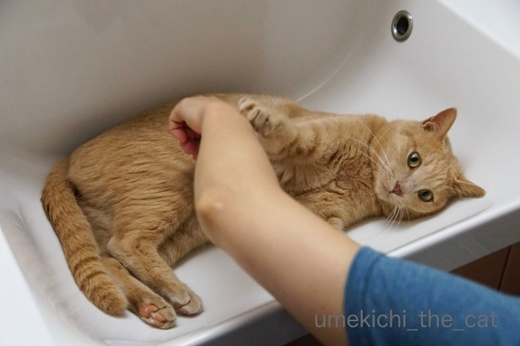
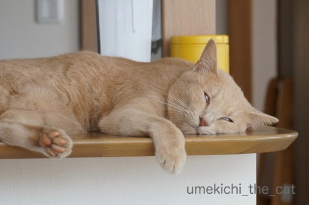
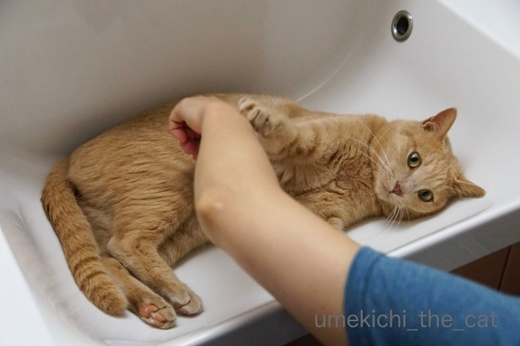
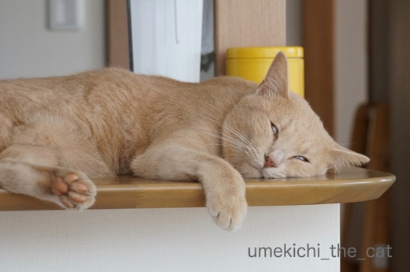

ものぐさ抵抗とOS再インストール [梅吉]
最近、朝身支度をする時間になると洗面ボールを占拠する梅吉さん。

しばらく忘れていたのに「せんめんぼーるは ええかんじやった」と
思い出したようです。
でも、私がお湯を使った後なので洗面ボールは温まってます。
冷えてひんやりしてから入れば良いのにw

ちょっと避けてくださいよ。

![[猫]](https://blog.ss-blog.jp/_images_e/101.gif) いややー（ぺちっ）
いややー（ぺちっ）
と軽いねこぱんちいただきましたー。

おっ！両手で抵抗？やる気出て来た？？
おかーさんと戦いますかー (๑•̀ㅂ•́)و✧

と思ったら足を使って力なく抵抗。（白ぱんつ大公開）
お互いに押したり引いたりするだけ。でもぶるぶる言い始めたので楽しいみたいです(⌒_⌒;
暑いからこんなものぐさな遊びも良いですよねー。

きっとカメラが捉えたこの夏いちばんの白目と思われますＯ(≧▽≦)Ｏ
もっとすごい白目もしてたのですがカメラが間に合わずwww
 ↑ガブッと一押し↑
↑ガブッと一押し↑
Macユーザー、それもMacに不調のある方以外はスルーしてくださいね＾＾
最近トラブルというほどではないにしてもMacの調子がなんとなく悪いのです。
いつまでもファンが回っていたり（Time Machineでバックアップ取っている時がひどい）
MacのiTunesからアンプに音を飛ばしているんですがなんか接続が悪い・・・
など他にも細かなことが色々。
で、メンテナンスの意味もあるのでMacOSの再インストールをすることにしました。
おっとが何度もやっているので教えを請いますよ＾＾
（おっとのMacは再インストールでも改善せず結局初期化しましたけど）
アプリやデータはそのまま引き継がれるので事前の準備は必要なし。
（ちなみにMacOSはHigh Sierra。バックアップはNASに。）
まずは再起動の状態に。
システムが終了して画面が黒くなったところで「command」と「R」キーを同時に押し続けます。
結構時間がかかります。
「ジャーン」といつもの起動音がしたら指を離してOK。
黒画面にリンゴマークの画面からこんな画面に切り替わります。
上から２番目の「MacOSを再インストール」を選択して、続ける。
利用規約が現れるので、同意する。
こんな画面になるので Macintosh HDを選択して、インストール。
作業が始まりました。
13分の作業予定。この最初の予定時間がどんどん延びて行くのがMacあるあるなんですが
私の場合はほぼ予定時間で終わった様です。
画面が黒くなったあといつもの起動画面にかわります。
ここから立ち上がるまで30分くらいかかりました。
（これは再インストール後初回のみの現象）
人によっては２時間、半日なんてのもネットで見たので私はサクッと終わった様です。
で、あれこれ家事などをしていて気付いたら
いつもの画面が立ち上がっていました＾＾
データや設定なども再インストール前のままで何の不都合もありません。
多々あった細かな不具合、依然として残っているものもありますが
改善されたものもあり。
特に面倒なこともないので何か不具合がある方、必ずしも改善される訳ではありませんが
やってみる価値はあると思います。
kikiさんへ。
以上が手順です。
参考にしたのは https://gori.me/mac/mac-tips/79032 こちらのサイトです。
ちょっと気がかりなのはOS Xユーティリティの画面が出た時に「ネットワークにつながっていない」
と言ってくるエラーの可能性があること。
そんなときは画面右上に出ている逆ベルマークみたいなWi-Fiアイコンをクリックして
接続し直します。
念のためネットワークのパスワードをお手元にご用意しておいた方が良いと思います。
それともう一つがバックアップ。
外付けのHDか何かにバックアップを取っている方が安心です＾＾
お役に立てると良いなぁ・・・

しばらく忘れていたのに「せんめんぼーるは ええかんじやった」と
思い出したようです。
でも、私がお湯を使った後なので洗面ボールは温まってます。
冷えてひんやりしてから入れば良いのにw

ちょっと避けてくださいよ。

と軽いねこぱんちいただきましたー。

おっ！両手で抵抗？やる気出て来た？？
おかーさんと戦いますかー (๑•̀ㅂ•́)و✧

と思ったら足を使って力なく抵抗。（白ぱんつ大公開）
お互いに押したり引いたりするだけ。でもぶるぶる言い始めたので楽しいみたいです(⌒_⌒;
暑いからこんなものぐさな遊びも良いですよねー。

きっとカメラが捉えたこの夏いちばんの白目と思われますＯ(≧▽≦)Ｏ
もっとすごい白目もしてたのですがカメラが間に合わずwww
Macユーザー、それもMacに不調のある方以外はスルーしてくださいね＾＾
最近トラブルというほどではないにしてもMacの調子がなんとなく悪いのです。
いつまでもファンが回っていたり（Time Machineでバックアップ取っている時がひどい）
MacのiTunesからアンプに音を飛ばしているんですがなんか接続が悪い・・・
など他にも細かなことが色々。
で、メンテナンスの意味もあるのでMacOSの再インストールをすることにしました。
おっとが何度もやっているので教えを請いますよ＾＾
（おっとのMacは再インストールでも改善せず結局初期化しましたけど）
アプリやデータはそのまま引き継がれるので事前の準備は必要なし。
（ちなみにMacOSはHigh Sierra。バックアップはNASに。）
まずは再起動の状態に。
システムが終了して画面が黒くなったところで「command」と「R」キーを同時に押し続けます。
結構時間がかかります。
「ジャーン」といつもの起動音がしたら指を離してOK。
黒画面にリンゴマークの画面からこんな画面に切り替わります。
上から２番目の「MacOSを再インストール」を選択して、続ける。
利用規約が現れるので、同意する。
こんな画面になるので Macintosh HDを選択して、インストール。
作業が始まりました。
13分の作業予定。この最初の予定時間がどんどん延びて行くのがMacあるあるなんですが
私の場合はほぼ予定時間で終わった様です。
画面が黒くなったあといつもの起動画面にかわります。
ここから立ち上がるまで30分くらいかかりました。
（これは再インストール後初回のみの現象）
人によっては２時間、半日なんてのもネットで見たので私はサクッと終わった様です。
で、あれこれ家事などをしていて気付いたら
いつもの画面が立ち上がっていました＾＾
データや設定なども再インストール前のままで何の不都合もありません。
多々あった細かな不具合、依然として残っているものもありますが
改善されたものもあり。
特に面倒なこともないので何か不具合がある方、必ずしも改善される訳ではありませんが
やってみる価値はあると思います。
kikiさんへ。
以上が手順です。
参考にしたのは https://gori.me/mac/mac-tips/79032 こちらのサイトです。
ちょっと気がかりなのはOS Xユーティリティの画面が出た時に「ネットワークにつながっていない」
と言ってくるエラーの可能性があること。
そんなときは画面右上に出ている逆ベルマークみたいなWi-Fiアイコンをクリックして
接続し直します。
念のためネットワークのパスワードをお手元にご用意しておいた方が良いと思います。
それともう一つがバックアップ。
外付けのHDか何かにバックアップを取っている方が安心です＾＾
お役に立てると良いなぁ・・・

カフェオレ色の梅吉

梅吉 2023年8月10日 永眠


梅吉と出会った譲渡会

犬猫の理由なき殺処分ゼロ
妄想広告
UMEKICHI 光

爆発的に早い！
時々攻撃的！
Thanks to Mr.Boss365
爆発的に早い！
時々攻撃的！
Thanks to Mr.Boss365

きっといつか…ひんやりするんだ…いつか…
って聞こえてきそうです(笑)
OSおつかれさまです＾＾
ウチはwinですねぇ｡ﾟ( ﾟ´д`ﾟ )ﾟ｡
お役にたてずに申し訳ないです＞＜
タグに…白ぱんつって入れる勇気は猫毬にはないですｗｗｗ
by 猫毬 (2018-08-06 00:24)
いつも洗面台をキレイにしておかないと
いけませんね(;^_^A
我が家には無理そうです（笑
足パッカーン♪
ぬるぬるの遊びも楽しそうです(#^.^#)
by きぃ (2018-08-06 06:31)
梅吉さん、白目最高です！
by ニコニコファイト (2018-08-06 07:04)
洗面台が濡れてるのもツボかもしれないですね。
我が家の洗面台は子猫さんが寝てることが多いですが
どかそうとしたら抵抗されるかな？＾＾；
by ぽちの輔 (2018-08-06 07:05)
梅吉さん、ハマってますねぇ＾＾
うちは洗面ボールは「ゴッドマザーの手から水を飲む場所！」
洗面所は「ゴッドマザーにナデナデしまくってもらう場所！」の
認識なので猫率めちゃくちゃ高いです(⌒-⌒; )
梅吉さんのゆる〜い抵抗は、楽しいお遊びですねぇ( ^ω^ )
by ニッキー (2018-08-06 08:00)
圭太様なら、この洗面ボールから身体が溢れちゃうんでしょうね(^_^;)
梅吉様は小柄なのかなぁ(〃'∇'〃) いずれ冷えてヒンヤリした味を覚えて、
梅吉様も大人の階段のぼっていくのかしら(〃'∇'〃) ヤンチャなまま^_^;
by middrinn (2018-08-06 08:02)
ん？
この後、結局、洗面所はいつ使えるのでしょうかー(^_^;)
by よーちゃん (2018-08-06 08:24)
白ぱんつ、ガン見しちゃったわ。
ごちそうさまーって思ったら、デザートの白目に釘付けよ！
大満足ｗｗ
MAC、初期化して再インストール後は
わたしのMACちゃんは完全復活でサクサク動いてます^^
by リュカ (2018-08-06 10:05)
洗面ひんやりきもちいいもんね。
お湯を使ったばかりで、ほんのり温まっていてもまったりしちゃうんだろうな～。
家もまったりしているときは、ものぐさ抵抗ですよ～。
私もさっき、ひなの子犬の時の白目写真を見ていたところ。
梅吉くんのように可愛くなくってめっちゃホラーなの。
でも、うちでは白目寝が大人気で♪
見つけるたびにパチパチ！にこにこなのですｗ
by emi (2018-08-06 10:44)
おはようございます。
梅吉君もダラダラ小さく遊びた時ですね？または・・・
ちぃさんの外出を阻止している可能性ありますね！！（⌒ー⌒）
「白ぱんつと白目」目白押しですね！！
Macの再インストール・初期化お疲れ様です。
小生、何度やってもヒヤヒヤします。特にネット関連の設定は重要ですね。
現在Macを購入してから、初期化してませんが・・・
時々、ローマ字入力が出来なくなったり、微妙に調子悪い時ありますね！！
Finderやアプリを強制終了すると、解決しますが・・・
ちぃさんのMacは、何年もの！？(=^･ｪ･^=)
by Boss365 (2018-08-06 11:38)
梅吉さんの「ぺち」とか「けり」とか微妙なダレ感がかわゆいと思ったら、白目は力こもってる!! これよりすごい白目があるなんて~。みたい~~。
by zombiekong (2018-08-06 12:12)
先ほど、発覚した『アンゴン』のランチ予約はコースのみでした。
普通のランチは並んでください。
期待させて申し訳ありませんでしたm(._.)m
このことが気になって、まずはお知らせを先にします。
梅吉さんのことと、再インストールの件はじっくり読んでからm(._.)m
by kiki (2018-08-06 12:27)
梅吉さんの「ぺち」がかわいい～(#^^#)
洗面台のカーブが居心地よさそうですね♪
朝出かけるまえにコレだと遅刻してしまいそうです。
私も同じように足の裏をぬんぬん押すのが好きなのですが、それまでダラダラしていたクセに、一気にダンゴムシのように丸まって噛みつかれます^^;
いったいこんな乱暴者に誰が育てたのやら？！(≧▽≦)
白目に白パンツ、梅吉さんのツボは「白」ですね！！
by ゆきち (2018-08-06 12:37)
洗面ボール、良いカーブですね（笑）
梅吉さんにピッタリ、フィットしています。
白ぱんつも頂きましたよ（笑）
白目もまったり具合が良いですね。
只今、再インストールから帰還しました（笑）
エラーが出ることもなく、スムーズにはかどりました。
ちぃさんと同じような時間で終了しました。
残念ながら、コピペは出来ないままです。
画面を矢印を出して、大きくしたり小さくしたりも、相変わらずできません。
何かが変です。
次は初期化に挑戦？かな。
OSのインストール、丁寧な教え方で迷うことなくサクサクとできました。
このようなことは、一生しないことだと思っていましたが、良い経験でした。
心から感謝しています。
by kiki (2018-08-06 14:58)
とーっても、気持ちが良さそうですね♡
我が家のニャンズは入らないだど、
一度味わったらヤミツキになるのかしらん？
もれなく、ちぃさんと楽しく遊べちゃう特典付きだから、入り浸っちゃうのかもね(^^♪
そしてトドメの白目な梅吉さん。、
マジで、リアル国芳さんだわー！！！
この目付きは、浮世絵の世界だけかと思ってたけど、
3次元でもあった！！！ うーむ、すごぉぃぃぃ（←マジ感心）。
by morichan (2018-08-06 16:17)
白目 ごちそうさまです。
めっちゃ白目です。ここまで白目だと気持ちいいです。梅吉君最高!!
by palpal (2018-08-06 16:43)
梅吉さん
白目で熟睡ですね！
Macは全然判らないです(^^)
by ma2ma2 (2018-08-06 17:38)
家の猫も同じ事をしてました。
暑い季節ですから、やっぱりホーローのひんやり感が好きなんでしょうね。
でも、それだけでは終わらない梅吉さん、素敵です(^^)
by kou (2018-08-06 18:26)
ひんやりして気持ちよさそうですね。^^)
「ぺち」の力加減、よく分かります～。
私はWindowsを使っているのでMacOSのことは分かりませんが
最近購入したペットボトルホルダーが「High Sierra」製です。
・・・って、関係ないですね。^^;
by yes_hama (2018-08-06 21:32)
冷たいんですね。
ちょっと思ったんですが猫さんは毛があるのに冷たいのを感じるんですね。
猫さんの不思議を感じました。
暑さで頭がボーとしています(^-^;
by riverwalk (2018-08-06 22:04)
猫毬さん＞
ふふふ。いつかひんやりするんだ・・・
通電してない暖房パネルの前に陣取る
逆バージョンもありますねー(≧▽≦)
暖房の方はそれに負けてついついスイッチオンしちゃう下僕ですw
あら？タグ白ぱんつ？
心に一点の曇りもやましさもなきゃ出来ますって(*>艸<)
きぃさん＞
そうなんですー。
洗面ボール、使った後は常にふきふき。
キレイになって良いんですが
急いでいる時はメンドーですw
体力を消耗せず汗をかかなくて良いお遊び
この時期は必須です！！
ニコニコファイトさん＞
ありがとうございます＾＾自慢の白目なんですよヾ(*ΦωΦ)ﾉ
ぽちの輔さん＞
洗面台は！！使ったら必ず拭いてまーす。
それじゃないとびしょびしょの足で
その辺を走り回って大変ですから・・・
（足が濡れてて滑るのが面白いらしいです）
ぽちの輔さんは子猫さんをどかそうとしたことがないの？？
なんてお優しい・・・
洗面台の攻防は梅吉VS人間、夏場以外はバトルになりますよwww
（もちろん夏でもバトルの時はあります）
ニッキーさん＞
にゃんずさんにとっては洗面所は憩いの場所なんですね！
しかしそれではゴッドマザー様の朝の身支度が
なかなか進まない時があるのでは・・・
嬉しい様なめんどくさい様な複雑なお気持ちお察ししますm(_ _)m
middrinnさん＞
梅吉は！永遠の少年なんですよ(^_－)☆
ちなみに梅吉はだいだい4.6kg（猫の平均体重って難しいです）
見た目も決して小柄ではありません。
えっと・・・大御所様御一家が（ノエルさんのぞく）規格外なのですよ・・・
よーちゃん＞
ゆるーい攻防はブログ用の写真を撮ったら終了。
この後は強制撤去になりましたよ。
こちらが力づくで押し切ろうとすると
梅吉もちゃんと攻撃してきますwww
リュカさん＞
この記事はツボる人にはなかなかのフルコースだったでしょーＯ(≧▽≦)Ｏ
ωも見えてるしーーー！！！
（あ、今見直したでしょwww）
やっぱり最強のメンテは初期化かな？
たまに健康診断みたいにディスクユーティリティで
「First Aid」をしとくと良いみたいよ＾＾
emiさん＞
梅吉はあんまり暑がりじゃないみたいだから
エアコンの冷気でちょっぴり冷えた体を
使用後の洗面ボールで温めているのかもねー＾＾
可愛い子は、変顔＆ホラー顔なほど可愛いから！！
パチパチ拍手でみちゃうのわかるわー。
ひなちゃんの白目、想像しちゃった！！
ぽちさんが探している猫さん、本当に見つかると良いね。
とっても可愛い子達だし、人間大好きみたいだから
どこかのお家でお腹いっぱい涼しく過ごしてそうな気もするよ＾＾
私のソネブロはツイッターと連動してるので
微力ながらツイッターでも拡散したかな？
露出度は少しでも高い方が良いもんね！
Boss365さん＞
目と白、上手くかかってますねー！！！
我が家の上限の座布団三枚進呈いたしますよ(^_－)☆
私のMacは2012年製ですよー。
私と同じくメンテが必要なお年頃でしょうかw
OS再インストールをしてから改善されてない不具合もありますが
サクサク進む様になったかな＾＾
ディスクユーティリティーのFirst Aidも時々すると良いみたいですね！
このMacにはまだまだ頑張ってもらわなきゃ！！
zombiekongさん＞
ゆる〜くダレていると見せかけて・・・
白目は嘘をつきませんから！！
梅吉の白目は全てをお見通しでもあるんですよー( ´艸｀)
すごい白目良いでしょw
もっと瞼が開いてて一見起きているみたいに見える超絶白目です。
飼い主の特権でーす。
ゆきちさん＞
ちょっと汗ばんだ肉球の「ぺち」はたまらない感触ですよー＾＾
「ぬんぬん」これ最高のネーミングですね！
よし(๑˃̵ᴗ˂̵)و私も今後そう呼ぶことに致します。
足ぬんぬんは攻撃される可能性は低いのですが
手ぬんぬんは非常に危険ですよねー。
同じく「誰がこんな乱暴のもに・・・」ですが
それは、幼い頃手で遊ばせたから！？
でも痛いけど最高のコミュニケーションですよね(^_－)☆
kikiさん＞
アンゴンは、夏休み中は混んでそうだし暑いので
涼しくなってから並ぶことにしまーす。
美味しいものはそう簡単には食べられない、ですね＾＾
で、ディスクユーティリティーを使ったメンテナンスの仕方です。
（おっとに聞いたら簡単に行き着く方法がありました）
Finder（青白のオペラ座の怪人みたいなアイコンです）を開きます。
左側にデスクトップに始まる項目が出てきます。
アプリケーションをクリック。
ユーティリティーと書いたファイルがあるのでそれをクリック
ディスクユーティリティーと書いた聴診器のついたアイコンがあるのでクリック。
左側にある「内蔵」Macintosh HDを選択して
First Aidと書いた聴診器のアイコンをクリック。これで作業が始まります。
http://itea40.jp/technic/mac-beginners/os-x-el-capitan/how-to-check-and-repair-volume-error-of-disk-using-first-aid/
が参考になるかと思います＾＾
by ちぃ (2018-08-07 21:05)
相変わらずの白目もすてきです。
そして！我が家よりずっと気持ち良さそうな湯舟（笑）
(我が家では「湯船に浸かってる」いいます）
やっぱり、身体が濡れても気にしないんですね^^;
うちのは、抱っこで出してくれるのを期待して転がっているようです^^;
うちのMacも年期入りなので日々戦々恐々です・・・。
（立ち上げ時、ログイン画面にならず真っ白なままなこと時々^^;）
ちょっとの不調なら、PRAMクリアとかSMCリセットでいけませんかね。
by Ja-Kou66 (2018-08-07 22:50)
洗面ボウル、梅吉さんにピッタリサイズだわ～( ´∀｀ )
ヒミツの白パンツ、見ちゃった～♪
可愛いね( ´艸｀)♡
by マーヤ (2018-08-08 01:02)
すっごいゴージャスな洗面ボールですこと！！
梅吉ちゃんのくつろぎ場として再稼働も嬉しいですね＾＾
あまりの気持ちよさに、白目ちゃん(笑)
うちは、キッチンのシンクが・・・
なので料理終わった後、カンペキに掃除しとかないとなりません。
年中ではないですが、この暑い夏にシンクで昼寝してる子たちです。
うちはWindows10に昨年手を出して、一応苦しみました。Macは未経験です。
グリニーズ、やはり丸のみでしたぁー。でも美味しいんだね！
これからもあげます。グリニーズが入っているおやつボトルを昨夜は必死で開けようとしてる子もおり、参りました('◇')ゞ
by ake_i (2018-08-08 09:11)
そうです。リンガーハットです^^
猫ちゃん見つかりますように^^
by ニコニコファイト (2018-08-08 09:38)
morichanさん＞
あら、ポポくんソフィーさんは洗面ボールは
未体験ゾーンなのですね！
一度味を覚えてしまうと２ニャンさんで入れ替わり立ち替わり・・・
ニンゲンの使う余地が無くなっちゃうかもしれませんよー。
お気をつけください(*>艸<)
リアル国芳とはー！！
梅吉は前世で国芳さんに飼われてたのかもしれませんねwww
palpalさん＞
一分の隙もない白目ですからね！
飼い主の私が見てもあっぱれです(๑˃̵ᴗ˂̵)و
ma2ma2さん＞
私はWindowsを離れてはや10年近く・・・
もうWindowsはちんぷんかんぷんですwww
kouさん＞
洗面ボール好きのにゃんこは多いですよね＾＾
洗面ボールは好きに使わせてますが
トイレの手洗いタンクだけは阻止してます！
yes_hamaさん＞
そうそう！爪も出てないし
肉球が気持ちよーくヒットしてくるんですよね！！たまりません(≧▽≦)
私もかつてはWindowsを使っていましたよー。
乗り換えたら他のデバイスをつなげる？取り込む？
時に起きる不具合発生率が格段に減って・・・
以来Mac一辺倒です！
riverwalkさん＞
立秋を過ぎたとはいえまだ暑いですw
まだまだボーッとしましょう！！
にゃんこの毛、温度を感知したり皮膚を守ったりする
大切なものなんですって。
毛は刈っちゃだめです、って見たことがあります＾＾
Ja-Kou66さん＞
湯船は（笑）梅吉が入る様になると
使用後は拭き上げるのがマストになります(-_-メ)
めんどくさいのですが、濡れたところに寝転がるだけならまだしも
濡れた足で走り回って滑って遊ぶ（コケるのが面白いらしい）
ので余計に大変なことになっちゃうんですよねwww
PRAMクリアとかSMCリセット、今度やってみまーす！
昨日はディスクユーティリティ診断をしましたよ。
ただいま絶賛Macのメンテ中です＾＾
マーヤさん＞
梅吉用に誂えたみたいになってますよね＾＾
もうどうぞ、好きに使ってください、ですwww
白ぱんつ、惜しげも無く披露しちゃいましたよ( ´艸｀)
ake_iさん＞
使用後の洗面ボールをキレイに拭き上げるのも
面倒だと思っていたのに・・・
シンクをカンペキに掃除ですか！！
それは暑い時期大変です・・・お疲れ様でございますm(_ _)m
でもー、気持ち良さそうに昼寝されたら
「ま、いいか」ってなりますよねw
Windowsは７までならなんとか、触れるかなぁ。
それ以降は未知の世界ですw
グリニーズ、そんなに大人気なのですね！
うちは中身が何であれにゃんこの食べ物の入っている入れ物は
冷蔵庫以外に保管できませんw
開けようと何時間でもねばりますw
あの根性見習いたくもあります(⌒_⌒;
ニコニコファイトさん＞
時々無性に食べたくなるリンガーハットです＾＾
にゃんこ、私は何もできませんが
見つかることを願うのみです。。。
by ちぃ (2018-08-08 15:51)
今実行しました。
ITEA4.0さんは8項目の確認などでしたが、私の場合は35ありました。
残念ながら、
『ボリュームMacintoshHDは問題ないようです』と表示されませんでした。
が、終了コードが0で、壊れているという表示はありませんでした。
なのでHDが壊れているわけではないと思います。
どういった状態なのでしょうか？
相変わらず、
コピペや矢印で拡大縮小すること（言葉忘れました）できません。
今回のディスクユーティリテーのFirst Aidはいったことがありますが、
実行は初めてで、面白かったです。
また、良い情報を教えてください。
by kiki (2018-08-08 22:38)
kikiさん＞
そうでしたかー。残念残念・・・
お互い不具合は完全に改善されませんでしたが
軽くなってMacさくさくライフを手に入れた、ということですねw
うーん、こうなると初期化？
ハードル、高いです。。
また、そう面倒でない不具合改善方法があったらお知らせしますねm(_ _)m
by ちぃ (2018-08-09 20:36)